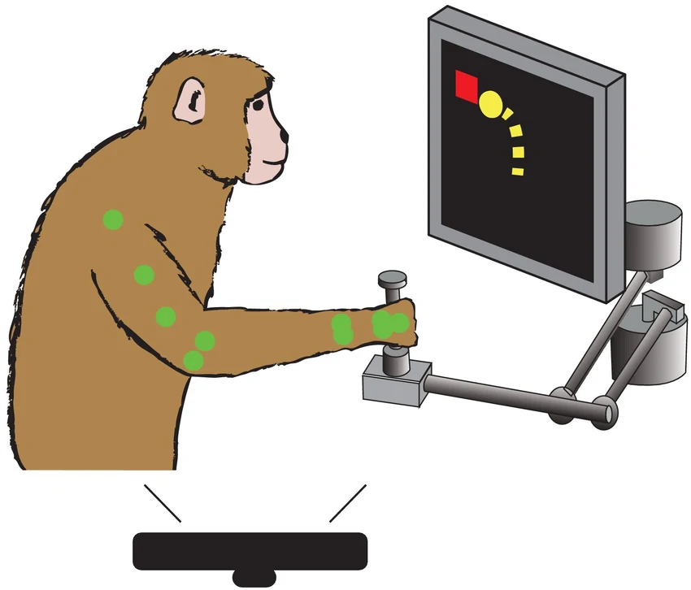

Sensory cortex / Macaque C
The bump and the reach
A robot briefly pushed the handle in a macaque’s hand. A visual cue then asked the animal to reach. Turn the arm to see where its markers moved, and follow the spikes recorded from sensory cortex on the same clock.
Optical tracking
Arm in 3D
The dots are tracked sites. The optional outline suggests the shape of the limb between them. Its width is illustrative. The green trail follows the selected site over the preceding 100 ms.
Robot encoders
Handle from above
● Current handle○ Measured endpoint◆ Forecast endpoint
The grey line traces the whole trial. The two encoders have their own origin. The arm view uses the shoulder as its origin.
Coordinates for all ten markers
XYZ follows the processed archive. Each row gives the marker name, its location on the authors’ arm model and its current shoulder-relative position in metres.
| Site | Arm region | X | Y | Z |
|---|
Electrical recording
What fired in those 10 milliseconds?
The researchers sorted electrical events from area 2 of the sensory cortex into 30 putative neurons. Each tile gives one unit’s count in the current 10-ms bin. Its label pairs an electrode channel with that session’s sorting number. Tile order follows the data columns. The file gives no coordinates for individual units.
Each tile shows electrode / sort above the spike count. Brighter green means more spikes. The 52 unsorted columns are excluded.
100 ms ahead
Where did the handle go next?
The forecast starts at an event or shortly afterward. It uses the preceding 200 ms of handle movement, cortical spike counts and cues already available. The open circle on the handle plot marks the encoder position 100 ms later. The diamond marks the position your browser computes from the selected set of frozen Transformer weights. Each seed starts the same training method from a different random initialization.
Task and recording references
From the original experiment




Chowdhury, Glaser and Miller (2020), Area 2 of primary somatosensory cortex encodes kinematics of the whole arm. Figures resized from the originals under CC BY 4.0. The Dryad data are CC0. The experiment includes no spoken instruction, peripheral nerve measurement or direct muscle recording. The archive has processed positions on a 10-ms grid. The original camera frames, tracking confidence and per-frame errors are unavailable.
Dryad recording · Original paper · Source software, coordinates and reuse